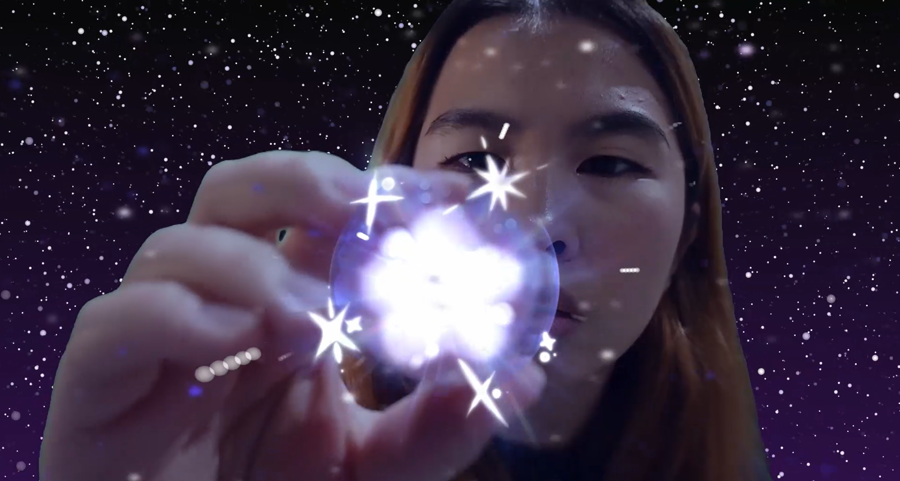
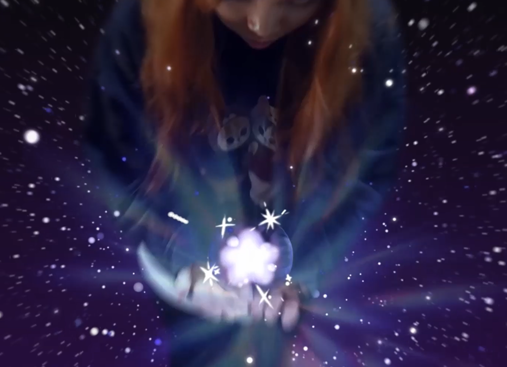
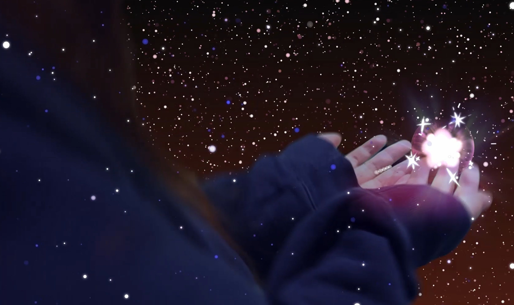
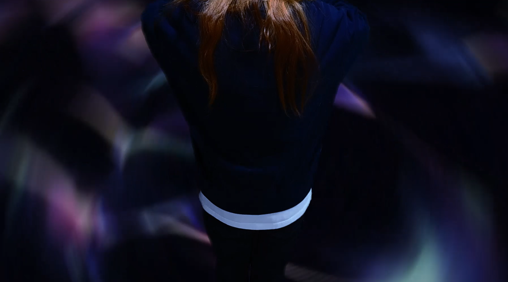
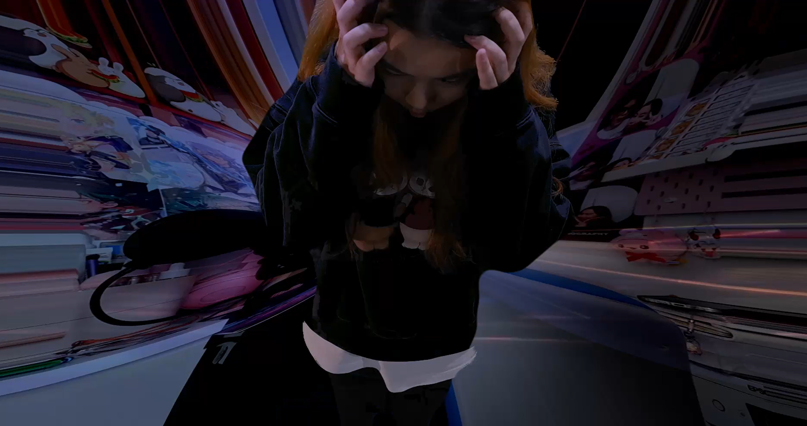
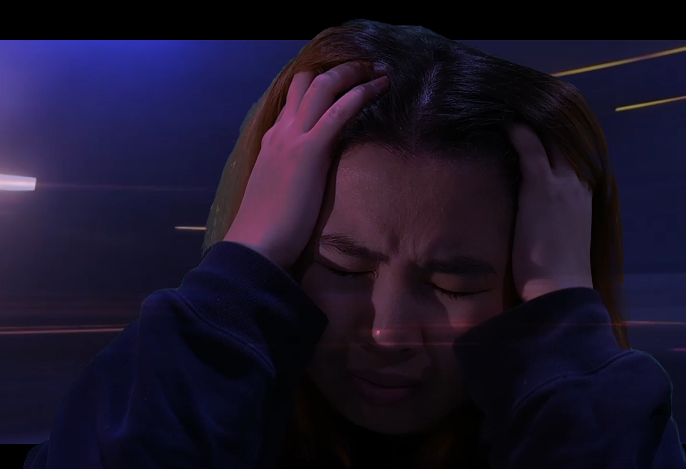
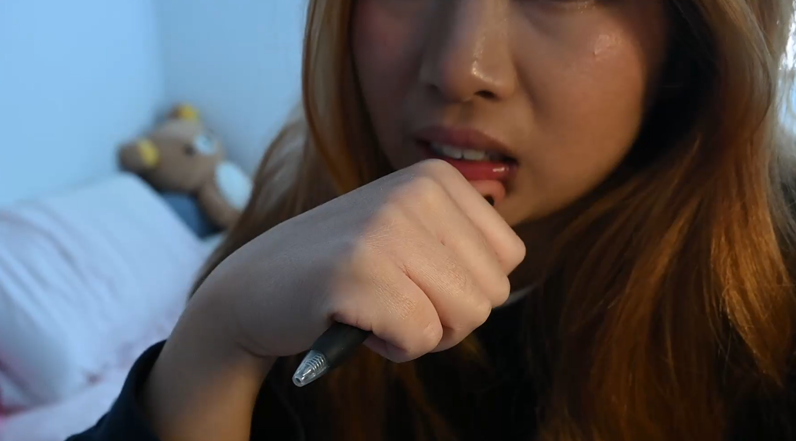

Explorons l'univers visuel




Explorations
Les explorations visuelles du court métrage ont permis d'explore les thèmes de l'identité et du changement à travers des éléments symboliques et des compositions artistiques.




Difficultés et réussites
Les difficultés rencontrées ont été liées à la gestion du temps et à la complexité de l'animation. Les réussites ont été les résultats visuels obtenus grâce à l'utilisation de techniques avancées de compositing.